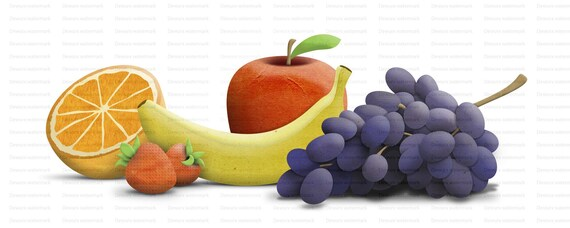

This page lists various fruits with their color, taste and weight. Below is a list of fruits, ordered by weight, and the ones with the highest and lowest weight are displayed in the table.
Fruits play an essential role in maintaining a balanced diet. They are packed with vitamins, fiber, and antioxidants, all of which help in boosting the immune system. They offer a variety of flavors and nutrients to keep the body healthy. Learn more about the health benefits of fruits here.
Fun Fact: Fruits come in many colors and can be enjoyed fresh, juiced, baked, or dried, offering endless delicious options!

| Fruit | Color | Weight (g) |
|---|---|---|
| Apple | Red/Green | 182 |
| Grapes | Purple/Green | 5g (per grape) |
Thanks for visiting! Stay healthy and enjoy fruits!